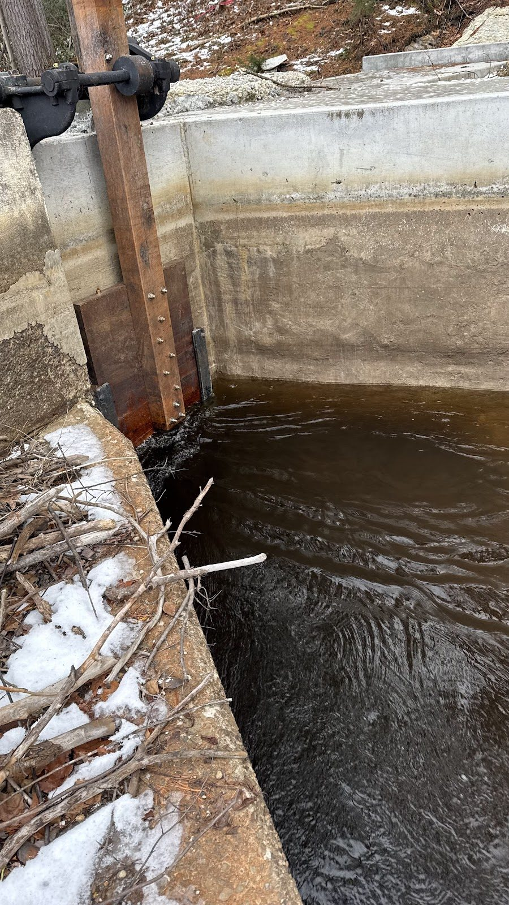
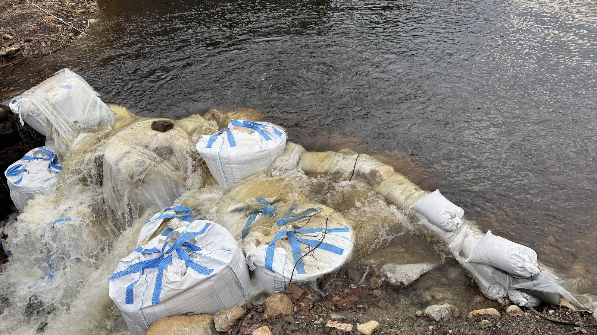
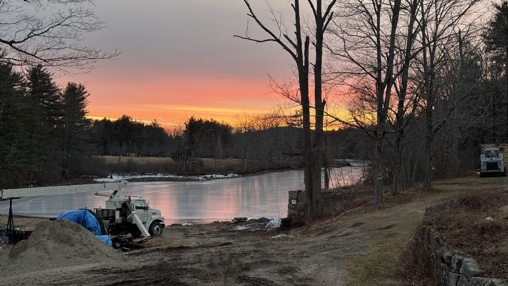
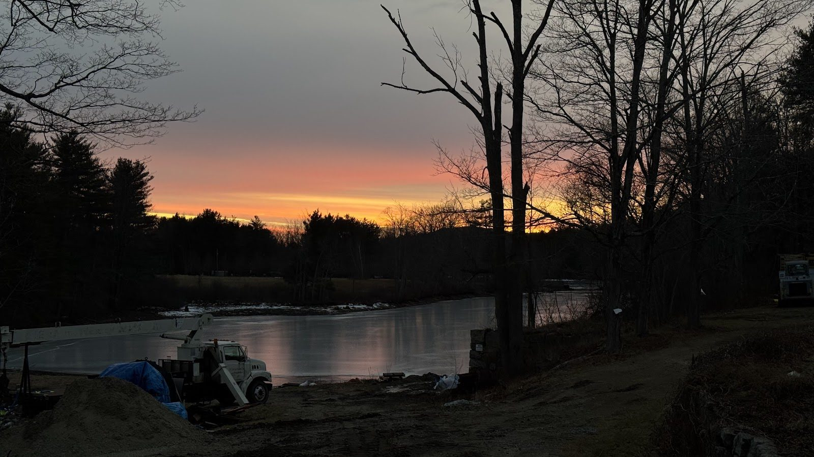
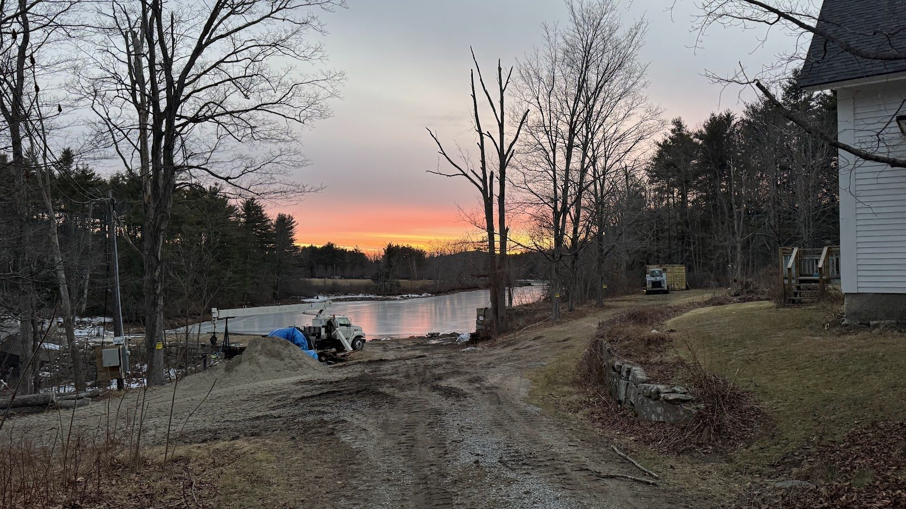

Winter Wins: Closing the Head Gate for the Season

On December 20th, the coffer dam breached for the second time — and this time, we read the writing on the wall.
With winter rains and snowmelt driving the watershed, the math turned unwinnable: water was arriving faster than any temporary structure could reasonably be asked to hold back, and every repair would have bought days, not weeks. So we made the call. The head gate was closed, the site was secured and winterized, and the pond was allowed to flood back up.





Within days, Waterloom Pond froze over — and just like that, the 2025 work season was over.
It's the right call, and it was always part of the plan in some form; the only question was the date. Working downstream of retained water in a New England winter isn't brave, it's reckless, and this project doesn't do reckless.
The season's scorecard, for the record: old turbine, draft tubes, and generator out. New draft tube and turbine in. Coffer dam and siphon built. Trash racks removed. Headgate machinery out for rebuild. Penstock adapter fabricated and fitted. Platform and footings renewed. Two coffer dam breaches, two recoveries, several tons of humility.
The pond gets the winter. The neighbors get their ice. The crew gets some rest, the headgate parts get their machine-shop time, and the penstock rehab plan gets refined by the woodstove.
We'll see you in the spring.